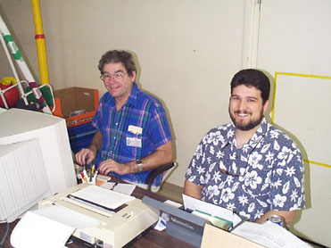

|  |
I have a very late model Astro Physics Traveler EDF in new condition with all standard accessories. Wanted to trade (with cash added) for an Astro Physics 155 EDF or Takahashi 6" in excellent condition. David Simons 408-943-4386, ysimons@yahoo.com
Unassembled AstroSystems Telekit manufactured for a 14.5" f/5 mirror. The kit is in perfect condition and ready to finish and assemble, no optics included. Ready for pick-up in Campbell. $1,000. Morris Jones (415) 453-2885 or (408) 836-4300, mojo@whiteoaks.com.